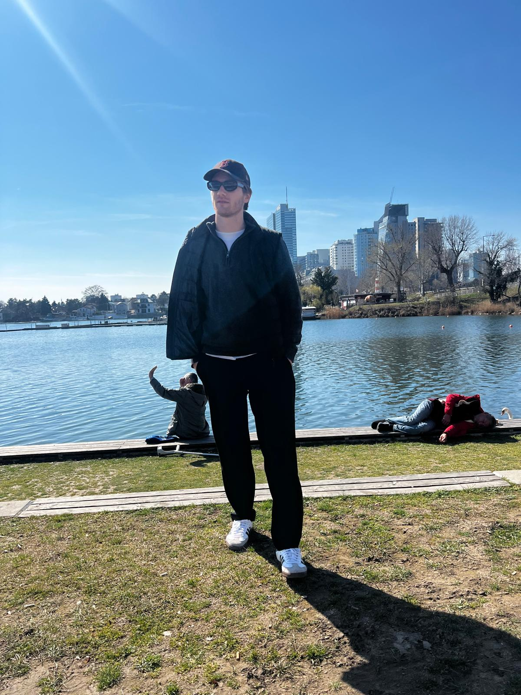
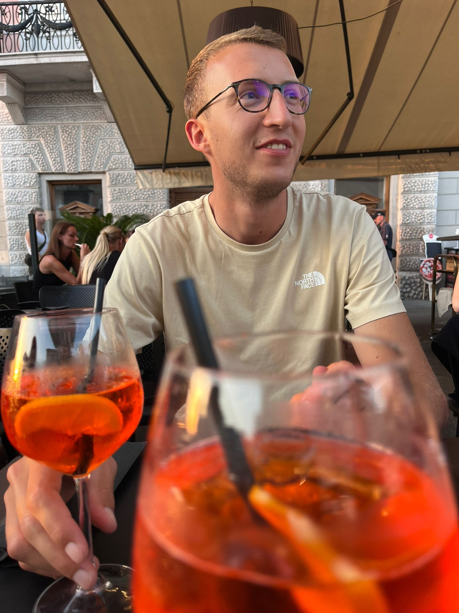
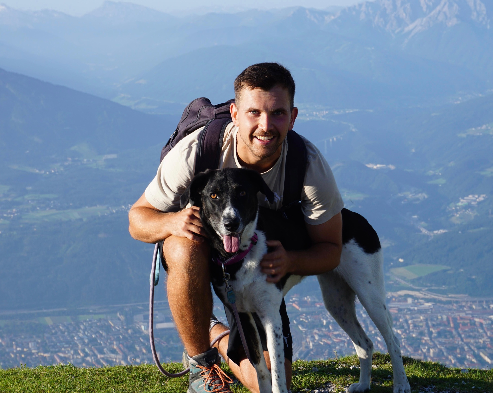

Unser Team
Bastian Wildbrandt
Bastian ist unser Tour-Planer und liebt es, Abenteuer in der Tiroler Natur zu organisieren. Er kennt jeden Pfad wie seine Westentasche.
+43 650 1234567
bastian@freizeit-tirol.at
Innsbruck, Tirol
Ben Mertens
Ben ist verantwortlich für die digitale Seite Website, App und Social Media. Wenn du online etwas siehst, kommt es von ihm!
+43 676 9876543
ben@freizeit-tirol.at
Kufstein, Tirol
Gregory Sprenger
Greg ist unser Naturführer und kennt die Tier- und Pflanzenwelt Tirols wie kein anderer. Mit ihm wird jede Wanderung zum Erlebnis.
+43 681 3344556
greg@freizeit-tirol.at
Lienz, Tirol